Summoner
Summoner fights through minions, sentries and whips. Calamity cuts summon damage to 0.75x while you also use a weapon from another class, so stay in class.
Markers: † risky to get · C crowd control · + support · ≤ has upgrades · * tedious to get · ν needs the Void subclass · Ω use together · Δ changed by Calamity · ≈ placed by rarity, may be a stage off · italic = Revengeance Mode or higher. Numbers in brackets are base damage. All-class armor follows the class sets on each armor line.
Pre-Hardmode
1 Pre-Eye of Cthulhu
Bosses The Grand Thunder Bird
The Grand Thunder Bird King Slime
King Slime Desert Scourge
Desert Scourge Giant Clam
Giant Clam Lepus
Lepus Eye of Cthulhu
Eye of Cthulhu
- Minions
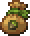
Acorn Bag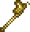
Butterfly Staff *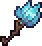
Frost Blossom Staff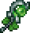
Nature Spirit Staff ν *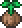
Living Wood Acorn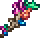
Seahorse Wand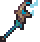
Stormjaw Staff C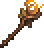
Sun Spirit Staff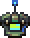
Wulfrum Controller
- Sentries and banners
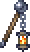
Ancient Steel Lantern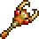
Antlion Staff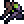
Rusty Beacon Prototype *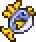
Spittin' Fish
- Held weapons
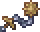
Brass Whip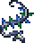
Glow Whip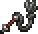
Leather Whip
- Armor
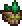
Living Wood armor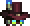
Wulfrum armor
All-class Ancient Shadow armor *
Ancient Shadow armor * Frigid armor *
Frigid armor * Gold armor /
Gold armor /  Platinum armor
Platinum armor Lead armor
Lead armor Thorium armor
Thorium armor Vespera armor ν
Vespera armor ν
- Accessories
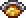
Amber Ring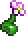
Botanical Symbiote *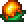
Living Wood Sap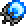
Soul Stone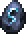
Spirit Glyph *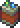
Wulfrum Battery
- Buffs
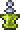
Summoning Potion *
2 Pre-Eater of Worlds / Brain of Cthulhu
Bosses Glowmoth
Glowmoth Crabulon
Crabulon
 Eater of Worlds or Brain of Cthulhu
Eater of Worlds or Brain of Cthulhu
- Minions
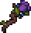
Belladonna Spirit Staff Brittle Star Staff
Brittle Star Staff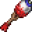
Deathstare Rod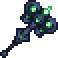
Night Illuminator- Nature Spirit Staff ν
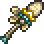
Storm-Hatchling Staff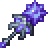
Permafrost Spirit Staff ν
- Sentries and banners
- Ancient Steel Lantern
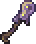
Caustic Croaker Staff †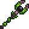
Creeping Vine Staff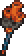
Polyp Launcher- Rusty Beacon Prototype
- Held weapons
- Brass Whip
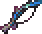
Cnidarian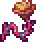
Coral Crusher- Glow Whip
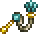
Grand Thunder Whip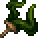
Kelp Whip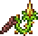
Snapthorn
- Armor
 Victide armor
Victide armor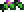
Wormwood armor- Wulfrum armor
All-class- Ancient Shadow armor *
- Frigid armor
- Gold armor / Platinum armor
- Lead armor †
- Vespera armor ν
- Accessories
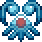
Hydrokinetic Antennae *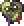
Necromancer's Heart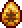
Prehistoric Arachnid- Soul Stone
- Spirit Glyph
- Voltaic Jelly
- Buffs
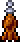
Artillery Potion- Summoning Potion *
3 Pre-Hive Mind / Perforators
Bosses Queen Jellyfish
Queen Jellyfish Viscount
Viscount
 The Hive Mind or The Perforators
The Hive Mind or The Perforators
- Minions
- Book of Virtues ν
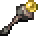
Earthen Spirit Staff ν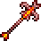
Imp Staff- Night Illuminator
- Permafrost Spirit Staff ν
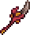
Scab Ripper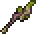
Vile Feeder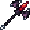
Viscount's Cane
- Sentries and banners
- Ancient Steel Lantern
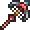
Ballista Rod ≤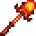
Infernal Animator- Rusty Beacon Prototype
- Held weapons
- Brass Whip
- Coral Crusher
- Kelp Whip
- Snapthorn
- Support
 Slime Gun +
Slime Gun +
- Armor
- Astro armor
- Obsidian armor
- Patch Leather armor
All-class Crimson armor
Crimson armor Depth Diver's armor
Depth Diver's armor Shadow armor
Shadow armor
- Accessories
- Hydrokinetic Antennae *
- Prehistoric Arachnid
- Soul Stone
- Spirit Glyph
- Squire's Shield ≤
- Voltaic Jelly
- Buffs
- Artillery Potion
- Summoning Potion *
- War Table
4 Pre-Skeletron
Bosses Queen Bee
Queen Bee Putrid Pinky
Putrid Pinky Deerclops
Deerclops Pharaoh's Curse
Pharaoh's Curse Skeletron
Skeletron
- Minions
- Book of Virtues ν
- Cursed Blade ν
- Dank Staff
- Earthen Spirit Staff ν
- Hornet Staff
- Imp Staff
- Vile Feeder
- Viscount's Cane
- Sentries and banners
- Goopwood Scepter
- Houndius Shootius
- Rusty Beacon Prototype
- Held weapons
- Brass Whip
- Kelp Whip
- Prism Break
- Snapthorn
- Support
 Aestheticus +
Aestheticus +
- Armor
 Aerospec armor
Aerospec armor- Astro armor
- Bee armor
- Obsidian armor
- Patch Leather armor
All-class- Crimson armor
- Depth Diver's armor
- Shadow armor
- Accessories
- Hydrokinetic Antennae *
- Necromancer's Heart
- Peanut Butter
- Prehistoric Arachnid
- Pygmy Necklace
- Soul Stone
- Spirit Glyph
- Voltaic Jelly
- Buffs
- Artillery Potion
 Flask of Poison
Flask of Poison- Summoning Potion *
- War Table
5 Pre-Slime God
Bosses Turkor the Ungrateful
Turkor the Ungrateful Granite Energy Storm
Granite Energy Storm Buried Champion
Buried Champion The Slime God
The Slime God
- Minions
- Arsenal Staff
- Book of Virtues ν
- Cursed Blade ν
- Dank Staff
- Earthen Spirit Staff ν
- Herring Staff
- Staff of Necrosteocytes
- Turkey Staff
- Viscount's Cane
- Yarn Ball
- Sentries and banners
- Boulder Probe Staff
- Goopwood Scepter
- Houndius Shootius
- Strange Skull
- Held weapons
- Brass Whip
- Prism Break
- Spinal Tap
- Support
- Aestheticus +
- Armor
- Aerospec armor
- Bee armor
- Obsidian armor
- Spirit Trapper's armor
All-class Darksteel armor
Darksteel armor- Depth Diver's armor
 Granite armor
Granite armor
- Accessories
- Hydrokinetic Antennae *
- Necromancer's Heart
 Sandwich *
Sandwich *- Scrying Glass
- Soul Stone
- Spirit Glyph
- Squire's Shield ≤
- Voltaic Jelly
- Buffs
- Artillery Potion
- Bewitching Table
- Flask of Poison
- Summoning Potion
- War Table
6 Pre-Wall of Flesh
Bosses The Excavator
The Excavator The Advisor
The Advisor Star Scouter
Star Scouter Wall of Flesh
Wall of Flesh
- Minions
- Arsenal Staff
- Book of Virtues ν
- Cursed Blade ν
- Earthen Spirit Staff ν
- Eye of Night
- Otherworldly Spirit Staff ν
- Repurposed Star Caller
- Sentries and banners
- Boulder Probe Staff
- Distress Caller
- Goopwood Scepter
- Strange Skull
- Held weapons
- Congealed Duo-Whip
- Prism Break
- Slime Puppet Staff
- Spinal Tap
- Support
- Aestheticus +
- Brittle Star Staff (defensive)
- Armor
- Obsidian armor
- Spirit Trapper's armor
 Statigel armor
Statigel armor- Twilight Assassin armor ν
All-class- Darksteel armor
- Depth Diver's armor
- Accessories
- Hydrokinetic Antennae *
- Jelly-Charged Battery
- Necromancer's Heart
- Platform Generator
- Sandwich *
- Soul Stone
- Spirit Glyph
- Squire's Shield ≤
- Buffs
- Artillery Potion
- Bewitching Table
- Flask of Poison
- Summoning Potion
- War Table
Hardmode
Stage 7 is the last Summoner list the modpack's wiki has started. From stage 8 the class picks come from the Calamity Mod wiki's class setups for the matching tier, so they cover vanilla and Calamity items only. The pack rebalances some of them, so check tooltips. All-class armor still comes from the modpack's wiki. Δ marks an item Calamity changes.
The "Other mods" lines are read from the pack's installed mod files: summon weapons and class armor from Thorium, Secrets of the Shadows, Catalyst, the Calamity Whip Addon and the other add-ons, placed at the stage their recipe or boss drop first becomes available under this pack's changes. Numbers are base damage after the pack's balance changes, and a boss name means the item drops there. ≈ marks an item placed by rarity alone, which can be a stage off.
7 Pre-Mechanical Bosses
Bosses Borean Strider
Borean Strider Fallen BeholderDreadnautilus
Fallen BeholderDreadnautilus Queen Slime
Queen Slime Cryogen
Cryogen

 first mechanical boss
first mechanical boss
- Minions
- Arsenal Staff
- Book of Virtues ν
- Cursed Blade ν
- Draconic Magma Staff
- Earthen Spirit Staff ν
- Eye of Night
- Otherworldly Spirit Staff ν
- Repurposed Star Caller
- Spider Staff
- Sentries and banners
- Boulder Probe Staff
- Distress Caller
- Goopwood Scepter
- Mortar Staff
- Queen Spider Staff
- Strange Skull
- Held weapons
- Congealed Duo-Whip
- Cool Whip
- Firecracker
- Prism Break
- Slime Puppet Staff
- Spinal Tap
- Thrombosis
- Also on the Calamity list
- Ancient Ice Chunk † (works best close to the boss)
- Pygmy Necklace
- The First Shadowflame
- Support
- Aestheticus +
- Brittle Star Staff (defensive)
- Old Lord Claymore (mobility)
- Armor
- Obsidian armor
- Spider armor
- Spirit Trapper's armor
- Statigel armor
- Twilight Assassin armor ν
All-class Crystal Assassin armor
Crystal Assassin armor Dragon's armor /
Dragon's armor /  Flesh armor
Flesh armor Durasteel armor
Durasteel armor Mollusk armor †
Mollusk armor †
- Accessories
- Hydrokinetic Antennae *
- Jelly-Charged Battery
- Necromancer's Heart
- Platform Generator
- Sandwich *
- Scrying Glass
- Soul Stone
- Spirit Glyph
- Squire's Shield ≤
- Buffs
- Artillery Potion
- Bewitching Table
- Summoning Potion
- War Table
 Flask of Cursed Flames /
Flask of Cursed Flames /  Flask of Ichor
Flask of Ichor
- Other mods' weapons
- Thorium
- Beholder Staff (43, Fallen Beholder)
- Stellar Rod ≈ (40)
- Crimson Hound Staff (37)
- Lady's Light ≈ (34)
- Hail Bomber ≈ (32)
- Blob-horn Coral Staff (28)
- Corruptling Staff (28)
- Master's Libram ≈ (24)
- Ice Fairy Staff ≈ (22)
Calamity Whip Addon- Night Butterfly (42)
- Kusari Gama ≈ (40)
8 Post-Mechanical Boss 1
Bosses Aquatic Scourge
Aquatic Scourge

 second mechanical boss
second mechanical boss
- Minions
- Igneous Exaltation † C
- Spider Staff
- Deepsea Staff
- Sentries
- Orthocera Shell
- Held weapons
- Cool Whip / Firecracker
- Armor
- Squire armor
- Spider armor
All-class- Crystal Assassin armor
- Dragon's armor / Flesh armor
- Durasteel armor
- Mollusk armor †
- Accessories
- Nuclear Fuel Rod
- Jelly-Charged Battery
- The First Shadowflame
- Spirit Glyph
- Buffs
- War Table
- Bewitching Table
- Summoning Potion
- Flask of Cursed Flames / Flask of Ichor
- Other mods' weapons
- Thorium
- Stellar System ≈ (50)
- Aeon Staff ≈ (46, sentry)
- Void Lance (40, sentry)
- Fungal Cane ≈ (28, sentry)
- Steamgunner Controller ≈ (15)
Thorium Bosses Reworked- Spitting Shroom Staff ≈ (40, sentry)
Catalyst- Underbite ≈ (80)
Clamity- Hell`s Bells ≈ (39)
Calamity Whip Addon- Shield Conduit Mk-II ≈ (61)
- Phase Scourge (45, seven colour variants)
9 Post-Mechanical Boss 2
Bosses Brimstone Elemental
Brimstone Elemental

 third mechanical boss
third mechanical boss
- Minions
- Dormant Brimseeker (keep the Brimseekers empowered, even while whipping)
- Deepsea Staff
- Daedalus Golem Staff
- Sentries
- Orthocera Shell
- Held weapons
- Cool Whip / Firecracker
- Armor
- Squire armor
 Daedalus armor
Daedalus armor
All-class- Crystal Assassin armor
- Dragon's armor / Flesh armor
- Durasteel armor
- Mollusk armor †
- Accessories
- Nuclear Fuel Rod
- Jelly-Charged Battery
- The First Shadowflame
- Spirit Glyph
- Buffs
- War Table
- Bewitching Table
- Summoning Potion
- Flask of Cursed Flames / Flask of Ichor
- Other mods' weapons
- Thorium
- Valkyrie Blade ≈ (57)
Secrets of the Shadows- Tidal Spirit Staff (30)
Calamity Whip Addon- Glitter Gutter (52)
10 Pre-Polaris
Bosses Polaris
Polaris
- The Calamity guide has no tier between the third mechanical boss and Plantera. Carry stage 9's gear into Polaris and add stage 11 picks as they unlock.
- Other mods' weapons
- Secrets of the Shadows
- Inferno Spirit Staff (47)
Calamity Whip Addon- Primal Bonds ≈ (75)
- Mechanical Arm (60)
11 Pre-Plantera
Bosses Lich
Lich Calamitas Clone
Calamitas Clone Plantera
Plantera
- Minions
- Vengeful Sun Staff
- Dormant Brimseeker
- Daedalus Golem Staff
- Sentries
- Orthocera Shell
- Cryogenic Staff
- Held weapons
- Durendal
- Armor
- Squire armor
 Hallowed armor
Hallowed armor- Daedalus armor
All-class- Crystal Assassin armor
- Dragon's armor / Flesh armor
- Durasteel armor
- Mollusk armor †
- Accessories
- The First Shadowflame
- Nuclear Fuel Rod
- Jelly-Charged Battery
- Hallowed Rune
- Buffs
- War Table
- Bewitching Table
- Summoning Potion
- Flask of Ichor (for Calamitas Clone)
 Flask of Brimstone (for Plantera)
Flask of Brimstone (for Plantera)
- Other mods' weapons
- Thorium
- Phantom Wand (48, Lich)
Calamity Whip Addon- Mass of Wailing (126)
12 Pre-Golem
Bosses Leviathan and Anahita
Leviathan and Anahita Astrum Aureus
Astrum Aureus Ocram
Ocram Golem
Golem
- Minions
- Viral Sprout Ω (with Evergreen Gin)
- Sand Sharknado Staff
- Plantation Staff
- Desert Tiger Staff
- Sentries
- Staff of the Frost Hydra
- Hive Pod
- Dreadmine Staff
- Held weapons
- Morning Star
- Borealis Bomber +
- Armor
- Tiki armor
- Fathom Swarmer armor
- Squire armor
All-class Reaver armor
Reaver armor Clamitas armor
Clamitas armor Demon Blood armor
Demon Blood armor
- Accessories
- Starbuster Core
- The First Shadowflame
- Jelly-Charged Battery
- Hallowed Rune
- Buffs
- War Table
- Bewitching Table
- Summoning Potion
 Flask of Venom
Flask of Venom- Flask of Brimstone
- Evergreen Gin Ω
- Other mods' weapons
- Secrets of the Shadows
- Evil Spirit Staff (60)
Consolaria- Eternity Staff (36, Ocram)
Calamity Whip Addon- Unfathomable (300)
- Actias Aliena (147)
- Ectopia (69)
- Other mods' class armor
- Thorium
- Life Bloom set
Consolaria- Warlock set
- Ancient Warlock set
13 Post-Golem
Bosses Forgotten One
Forgotten One
- Minions
- Raven Staff
- Resurrection Butterfly
- Sand Sharknado Staff
- Wither Blossoms Staff +
- Xeno Staff
- Sentries
- Dreadmine Staff
- Hive Pod
- Staff of the Frost Hydra
- Held weapons
- Dark Harvest / Morning Star
- Armor
- Valhalla Knight armor
 Hydrothermic armor
Hydrothermic armor
All-class- Reaver armor
- Clamitas armor
 Conduit armor
Conduit armor- Demon Blood armor
- Accessories
- Star-Tainted Generator
- Statis' Blessing
- Papyrus Scarab
- Hallowed Rune
- Buffs
- War Table
- Bewitching Table
- Summoning Potion
- Flask of Brimstone / Flask of Venom
- Other mods' weapons
- Thorium
- Volt Module (170, sentry)
- The Incubator (88, sentry, Forgotten One)
- Corrodling Staff ≈ (80)
- Bloody Pagan Staff ≈ (72)
- Eye of Odin ≈ (53)
- Rude Wand ≈ (48, sentry)
- The Black Cane ≈ (40)
Secrets of the Shadows- Starcaller Staff ≈ (64)
- Cruise Caller (47)
Calamity Whip Addon- Destruction Chain (200)
- Gold Rush (171)
- Loadout ≈ (145)
- Other mods' class armor
- Thorium Bosses Reworked
- Titan armor with the Titan Visor
14 Pre-Lunar Events
Bosses Duke Fishron
Duke Fishron The Plaguebringer Goliath
The Plaguebringer Goliath Empress of Light
Empress of Light Lux
Lux Ravager
Ravager Lunatic Cultist
Lunatic Cultist
- Minions
- Xeno Staff
- Wither Blossoms Staff +
- Resurrection Butterfly
- Infected Remote
- Fuel Cell Bundle
- Sentries
- Spikecrag Staff
- Dreadmine Staff
- Held weapons
- Dark Harvest / Kaleidoscope
- Armor
- Hydrothermic armor
- Plaguebringer armor
- Valhalla Knight armor
All-class Terrarium armor (no focus)
Terrarium armor (no focus)- Conduit armor
- Accessories
- Star-Tainted Generator
- Statis' Blessing
- Papyrus Scarab
- Hallowed Rune
- Buffs
- War Table
- Bewitching Table
- Summoning Potion
- Flask of Brimstone / Flask of Venom
- Other mods' weapons
- Secrets of the Shadows
- Ethereal Scepter (66)
- Chaos Spirit Staff (50)
Calamity Whip Addon- Existence Bonds ≈ (185)
- Shield Conduit Mk-III ≈ (170)
15 Pre-Moon Lord
Bosses Astrum Deus
Astrum Deus Subspace Serpent
Subspace Serpent Astrageldon
Astrageldon Bereft Vassal
Bereft Vassal Moon Lord
Moon Lord
- Minions
- Wither Blossoms Staff +
- Stardust Cell Staff
- Fuel Cell Bundle
- Sentries
- Spikecrag Staff
- Held weapons
- Kaleidoscope
- Armor
- Valhalla Knight armor
- Plaguebringer armor
- Hydrothermic armor
All-class Astral armor
Astral armor- Terrarium armor (no focus)
- Accessories
- Statis' Curse
- Star-Tainted Generator
- Papyrus Scarab
- Heart of the Elements Ω (with Heartreach Potion)
- Buffs
- War Table
- Bewitching Table
- Summoning Potion
- Flask of Brimstone / Flask of Venom
 Heartreach Potion Ω
Heartreach Potion Ω
- Other mods' weapons
- Thorium
- Nebula's Reflection ≈ (133)
- Shadow Orb Staff ≈ (90)
- Terrarium Enigma Staff (50)
Secrets of the Shadows- Lemegeton ≈ (62)
- Voidspace Aura Staff (54, sentry)
Catalyst- Astralpod Staff ≈ (80)
- Sandstone Reins (70)
Calamity Whip Addon- Gloamshard Conduit (275)
Infernum- Perditus (180, Bereft Vassal)
Post-Moon Lord
Class picks still come from the Calamity Mod wiki. Stages 19 and 20 share one list because Calamity has no tier for the Primordials. Every stage keeps War Table, Bewitching Table and Summoning Potion.
16 Pre-Providence
Bosses Profaned Guardians
Profaned Guardians Dragonfolly
Dragonfolly Providence
Providence
- Minions
- Tactical Plague Engine (ammo: Holy Fire or Luminite Bullets)
- Flowers of Mortality +
- Legion of Celestia
- Sentries
- Sanctified Spark +
- Rainbow Crystal Staff
- Lunar Portal Staff
- Held weapons
- Kaleidoscope
- Armor
- Valhalla Knight armor
- Stardust armor Ω (with Stardust Wings)
All-class- Astral armor
- Terrarium armor (no focus)
- Accessories
- Statis' Curse
- Star-Tainted Generator
- Heart of the Elements
- Stardust Wings Ω
- Buffs
 Flask of Crumbling
Flask of Crumbling
- Other mods' weapons
- Catalyst
- Resonant Striker (120, Dragonfolly)
Clamity- Planterror Staff ≈ (100)
Calamity Whip Addon- Rubellus (263)
- Butterfly Effect (247)
17 Pre-Polterghast
Bosses Ceaseless Void
Ceaseless Void Storm Weaver
Storm Weaver Signus
Signus Polterghast
Polterghast
- Minions
- Virid Vanguard
- Snake Eyes
- King of Constellations, Tenryū
- Dragonblood Disgorger +
- Sentries
- Sanctified Spark +
- Rainbow Crystal Staff
- Lunar Portal Staff
- Held weapons
- Kaleidoscope
- Armor
- Valhalla Knight armor
- Stardust armor Ω (with Stardust Wings)
 Tarragon armor
Tarragon armor
All-class- Astral armor
- Accessories
- Star-Tainted Generator
- Statis' Curse
- Profaned Soul Artifact
- Stardust Wings Ω
- Buffs
- Flask of Ichor
- Other mods' weapons
- Catalyst
- Blossom's Blessing (255)
Calamity Whip Addon- Gilded Reliquary (316)
- Shield Conduit Mk-IV ≈ (260)
18 Pre-Devourer of Gods
Bosses The Old Duke
The Old Duke The Devourer of Gods
The Devourer of Gods
- Minions
- Dragonblood Disgorger +
- Ethereal Subjugator
- King of Constellations, Tenryū
- Mutated Truffle
- Virid Vanguard
- Sentries
- Cadaverous Carrion
- Lunar Portal Staff
- Sanctified Spark +
- Held weapons
- Kaleidoscope
- Armor
- Stardust armor † Ω² (with Stardust Wings)
 Bloodflare armor Ω (with Heartreach or Photosynthesis Potion)
Bloodflare armor Ω (with Heartreach or Photosynthesis Potion)
All-class Omega Blue armor
Omega Blue armor
- Accessories
- Star-Tainted Generator
- Statis' Curse
- Profaned Soul Artifact
- Stardust Wings Ω²
- Buffs
- Flask of Crumbling
- Heartreach Potion /
 Photosynthesis Potion Ω
Photosynthesis Potion Ω
- Other mods' weapons
- Catalyst
- Unrelenting Torment (89, Polterghast)
Calamity Whip Addon- Eta Carinae (332)
- Mermaid's Tear ≈ (320)
- Necropsia (175)
19 Pre-Primordials and 20 Pre-Yharon
Bosses The Primordials
The Primordials Yharon, Dragon of Rebirth
Yharon, Dragon of Rebirth
- Minions
- Void Eater Marionette
- Sirius
- Mirror of Kalandra
- Ethereal Subjugator
- Corvid Harbinger Staff
- Sentries
- Sanctified Spark +
- Cadaverous Carrion
- Held weapons
- Kaleidoscope
- Armor
 Silva armor
Silva armor- Fearmonger armor
All-class- Omega Blue armor
- Accessories
- Nucleogenesis
- Profaned Soul Artifact
- Buffs
- Flask of Ichor
- Other mods' weapons, stage 19
- Calamity Whip Addon
- Resonant Void (420)
- Crack of the Universe (340)
- Shield Conduit Mk-V ≈ (340)
- Other mods' weapons, after the Primordials
- Thorium
- Ember Staff (260)
- Promethean Staff (200, sentry)
21 Pre-Shadowspec
Bosses Primordial Wyrm
Primordial Wyrm Exo Mechs
Exo Mechs Supreme Witch, Calamitas
Supreme Witch, Calamitas XG-07 Mars
XG-07 Mars Goozma
Goozma
- Minions
- Saros Possession
- Mirror of Kalandra
- Midnight Sun Beacon
- Lilies of Finality
- Sentries
- Sanctified Spark +
- Cadaverous Carrion
- Held weapons
- Saros Possession
- Kaleidoscope
- After Supreme Calamitas
- Metastasis
- Perdition (sentry)
- Cinders of Lament †
- After the Exo Mechs
- Ares' Exoskeleton
- Cosmic Immaterializer
- Armor
 Auric Tesla armor
Auric Tesla armor
All-class Gem Tech armor (after Draedon)
Gem Tech armor (after Draedon) Slippery Shogun armor (after Goozma)
Slippery Shogun armor (after Goozma)
- Accessories
- Nucleogenesis
 The Amalgam
The Amalgam- Profaned Soul Artifact
- Buffs
- Flask of Crumbling
- Other mods' weapons
- Hunt of the Old God
- Slime Cane (300, Goozma)
Calamity Whip Addon- Skybreaker Coil (410)
- Milkyway (395)
22 Endgame
Bosses Avatar of Emptiness
Avatar of Emptiness Nameless Deity of Light
Nameless Deity of Light
- Minions
- Temporal Umbrella
- Saros Possession
- Endogenesis
- Sentries
- Perdition
- Cadaverous Carrion
- Held weapons
- Universe Splitter
- Saros Possession
- Kaleidoscope
- Flamsteed Ring
- Armor
- Auric Tesla armor
All-class Demonshade armor
Demonshade armor- Gem Tech armor
- Slippery Shogun armor
- Accessories
- Angelic Alliance
- Nucleogenesis
- Profaned Soul Crystal † / Profaned Soul Artifact
- Buffs
- Flask of Crumbling
- Other mods' weapons
- Calamity Whip Addon
- Aurelian Sanctum (798)
- Chorus of Execration ≈ (666)
No item on this page matches that filter.